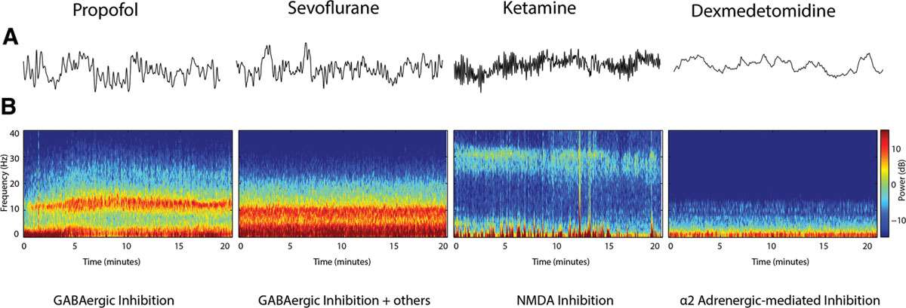

# BIS ### more than just a number > "The Answer to the Ultimate Question of Life, The Universe, and Everything" ----- ## Objectives * EEG physiology * Raw EEG interpretation * BIS 3.5 display update * DSA --- ## What this talk isn't going to cover * TIVA safety * the awareness debate and trials ----- ## Why bother ?! <img data-src="images/diathermy artifact.png" alt="diathermy artifact" height="500"> ----- ## Physiology <!-- >Patrick L. Purdon, Aaron Sampson, Kara J. Pavone, Emery N. Brown Clinical Electroencephalography for Anesthesiologists: Part I: Background and Basic Signatures. Anesthesiology 2015; 123:937–960 doi: https://doi.org/10.1097/ALN.0000000000000841 --> --- <img data-src="images/DSA.png" alt="dsa" height="500"> --- <img data-src="images/anterorisation of alpha.jpg" alt="dsa" height="500"> ----- ## How to "read" an EEG <img data-src="https://www.surfline.com/cdn-cgi/image/q=85,f=auto,fit=contain/https://d14fqx6aetz9ka.cloudfront.net/wp-content/uploads/2018/11/19125910/klein_nazare_portugal_nov2018_156841.jpg" alt="atlantic swell" height="500"> --- --- <img data-src="images/eeg_frequencies.png" alt="eeg frequencies" height="500"> ----- ## Dealing with unexpected values ----- ## EEG pharmacology <img data-src="https://upload.wikimedia.org/wikipedia/commons/thumb/8/89/Bandera_de_España.svg/1200px-Bandera_de_España.svg.png" alt="spain flag" height="500"> ---  ----- ## The Vunerable brain * Alpha power diminishes with age * The lower the alpha power the higher the chance of burst supression * Longer duration of burst supression correlates with post operative delerium. --- --- <!-- Punjasawadwong Y, Chau‐in W, Laopaiboon M, Punjasawadwong S, Pin‐on P. Processed electroencephalogram and evoked potential techniques for amelioration of postoperative delirium and cognitive dysfunction following non‐cardiac and non‐neurosurgical procedures in adults. Cochrane Database of Systematic Reviews 2018, Issue 5. Art. No.: CD011283. DOI: 10.1002/14651858.CD011283.pub2. Accessed 06 July 2021 --> ----- # Top Tips * filters * optimise the display view depending on phase of anesthesia * consider 2 channels ----- # Useful resources * ----- # credits ----- # Questions ----- ## made with #### [reveal.js](https://github.com/hakimel/reveal.js) #### [excalidraw](https://github.com/excalidraw/excalidraw)